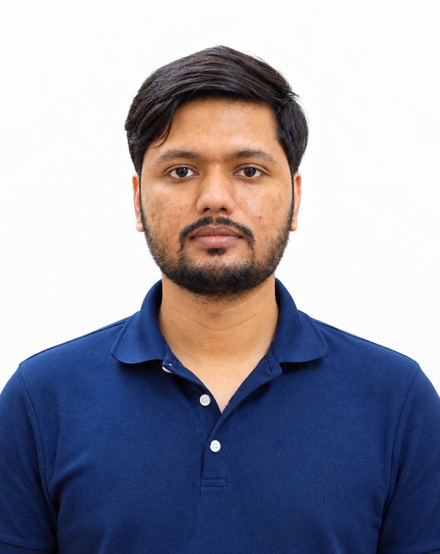
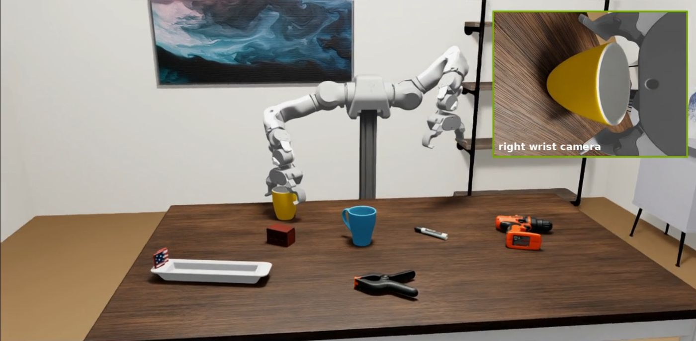
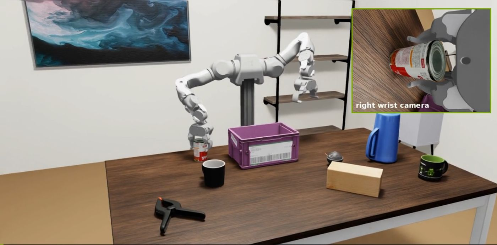
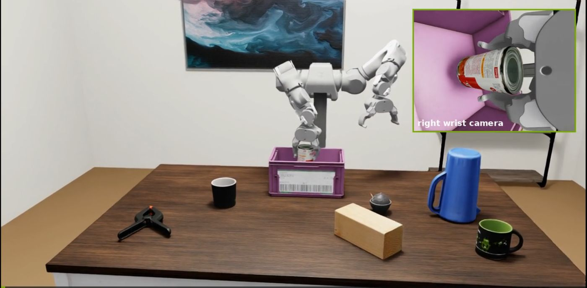
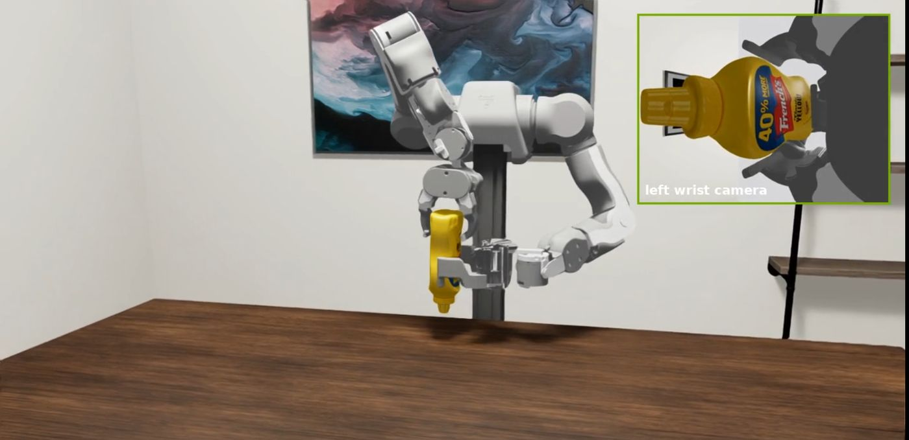
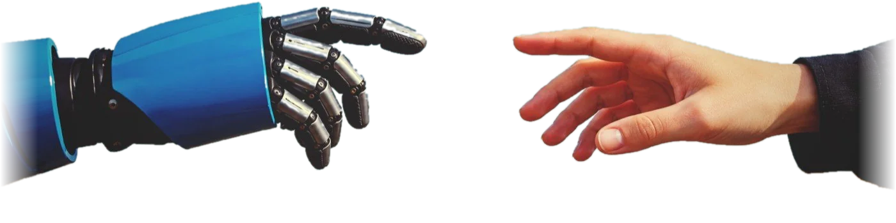

01
Vision-Language-Action Models
General-purpose manipulation policies built on VLM backbones with hierarchical reasoning and flow-matching action experts.
Robot Learning Researcher · MS (Research), Mechanical Engineering
Indian Institute of Technology Madras
I build Vision-Language-Action models that let robots see, reason and act. My work spans large-scale VLA pre-training, human-to-robot transfer from egocentric video, and taking learned policies from simulation to real robot arms.

I am an MS Research student in Mechanical Engineering at IIT Madras, advised by Dr. Prabhu Rajagopal. My thesis studies embodiment-invariant representations that let VLA policies learn from human egocentric video as well as robot data.
Most recently I was a Robot Learning Engineer at BotForge Labs, an IITM-incubated startup, where I led technical delivery of a 10-month engagement with Accenture Labs: we built BFL-1, a 2.3B parameter VLA for bimanual manipulation that performs comparably to π0.5 on RoboTwin.
Before research, I spent a year and a half at JCB India running Just-in-Time supply operations, so I care about systems that work reliably outside the lab, not just in benchmarks.
General-purpose manipulation policies built on VLM backbones with hierarchical reasoning and flow-matching action experts.
Co-training on egocentric human video and robot demonstrations, with alignment strategies and auxiliary losses for cross-embodiment representations.
Predicting future visual features (DINOv3) as a training-time signal that improves action learning without pixel generation.
Isaac Sim digital twins, RoboTwin benchmarks, teleoperation data collection and deployment on physical robot arms.
A tabletop environment in NVIDIA Isaac Sim with a dual-arm OpenArm robot and configurable assets. It supports position-based picks, right-to-left handovers and multimodal demo recording with synchronised wrist cameras, and it is being extended for teleoperation and π0.5 policy evaluation.
View the code on GitHub →



A 2.3B-parameter VLA for bimanual manipulation combining a Qwen3-VL 2B backbone for hierarchical reasoning with a 300M flow-matching Action Expert, benchmarked against π0.5, HRDT and ABot M0 on RoboTwin.
Bimanual OpenArm tabletop environment with teleoperation data collection, synchronised multimodal logging and rollouts of fine-tuned imitation-learning policies.
GitHub →Built gamepad teleoperation and logging for a 6-DoF Dobot NOVA 5, collected real demonstrations on five pick-and-place tasks, and fine-tuned the Octo VLA, reaching 55% success in physical rollouts.
GitHub →A pipeline that segments and labels subtasks in egocentric human video, producing training data for human-to-robot VLA co-training.
GitHub →Modelled non-circular gear tooth profiles in MATLAB, validated a three-link polycentric knee mechanism, and extended it into a lower-limb exoskeleton tested in the laboratory.
VLA models, VLMs, imitation learning, Transformers, flow matching, diffusion policies, LoRA, human-to-robot transfer
PyTorch, CUDA, Hugging Face, distributed training (DDP), BF16, Flash Attention, WandB, Docker
ROS 2, NVIDIA Isaac Sim, RoboTwin, Gazebo, LeRobot, teleoperation, real-robot deployment
Python, NumPy, OpenCV, scikit-learn, MATLAB, Git, Linux, Claude Code
SolidWorks, Siemens NX, Fusion 360, mechanism design, fabrication
Client-facing technical delivery, weekly research reviews, founding member of SAE Collegiate Club
Indian Institute of Technology Madras · CGPA 8.21 / 10
Malaviya National Institute of Technology (NIT) Jaipur · CGPA 8.30 / 10
NIT Jaipur · Led powertrain and fabrication for the BAJA 2020 off-road vehicle team; organised a week-long automobile workshop and student recruitment.

Teaching robots by learning from people.
I am open to research and engineering roles in robot learning, Vision-Language-Action models, robot simulation and embodied AI. I'd be glad to talk.